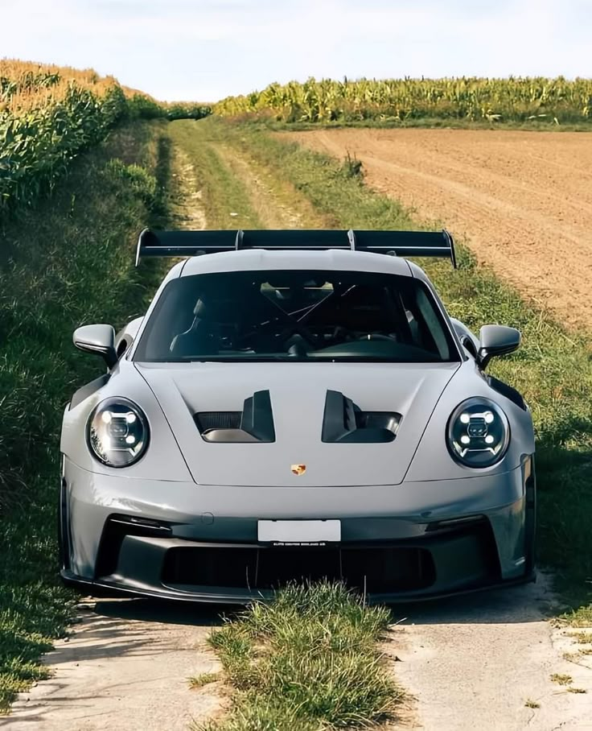
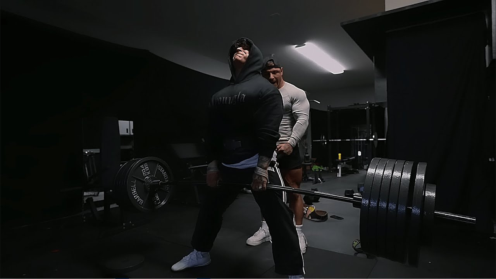
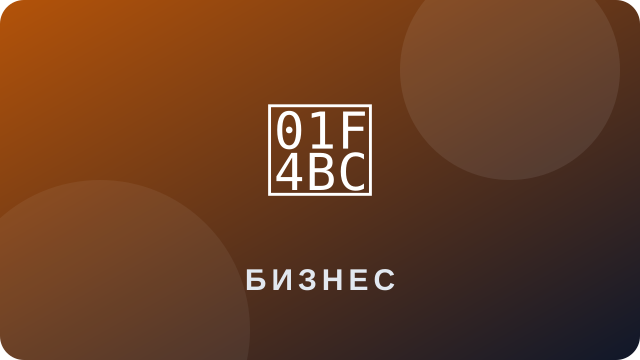
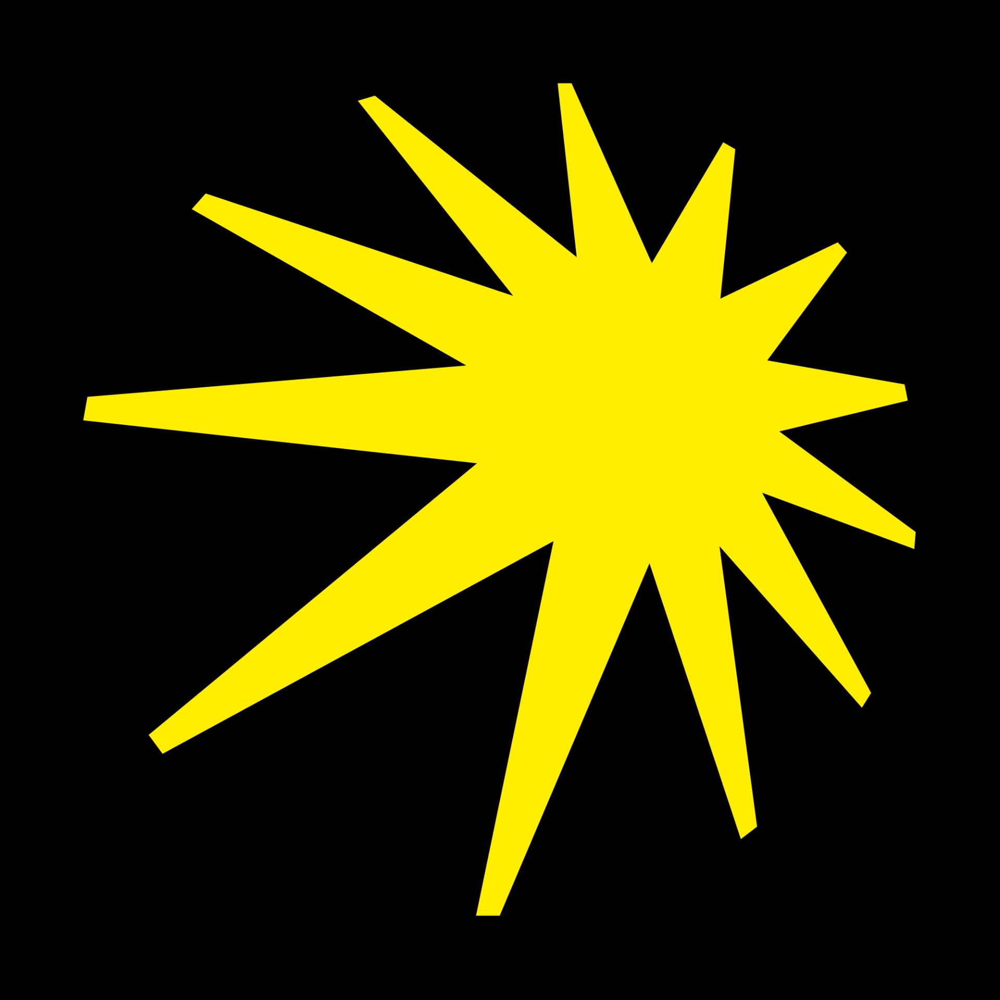
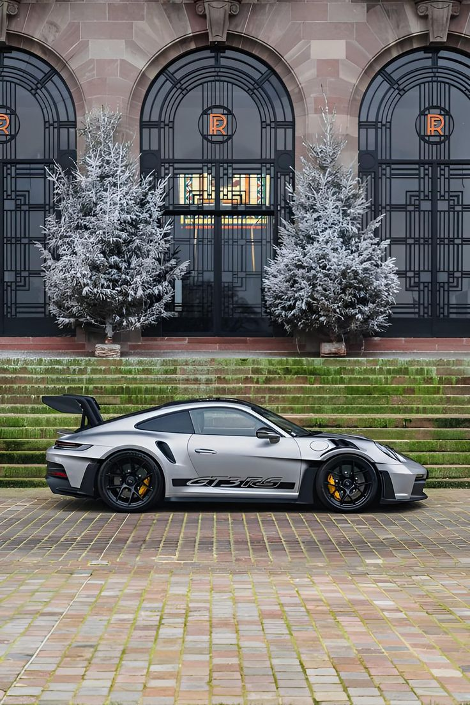

Автомобили
Мне нравится автомобильная культура, дизайн машин и то, как устроены разные модели.
ЛИЧНАЯ СТРАНИЦА
У меня много разных интересов. Они помогают узнавать новое, развиваться и интересно проводить свободное время.

Мне нравится автомобильная культура, дизайн машин и то, как устроены разные модели.

Тренировки помогают становиться сильнее, выносливее и дисциплинированнее.
Мне интересно придумывать идеи, снимать и монтировать короткие видео.

Мне интересно изучать бизнес-идеи, рынок и способы воплощать проекты в жизнь.

Музыка помогает отдохнуть, настроиться на работу и сопровождает меня каждый день.
Мне нравится открывать новые места, получать впечатления и знакомиться с интересными локациями.
Изображения, связанные с темами, которые мне интересны.


Мне нравится узнавать об автомобилях больше: изучать их внешний вид, особенности, характеристики и историю разных моделей. Особенно интересно наблюдать, как сочетаются дизайн, технологии и инженерные решения.
Это увлечение мотивирует меня узнавать новое и следить за автомобильной культурой.